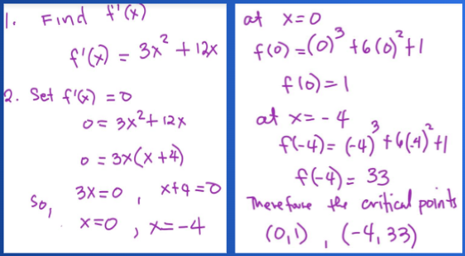

Critical Points, Local Maxima and Local Minima
Let's Check
The slope on the right side of the point (-4, 33) is positive which means the function is increasing. The slope on the left side of the point (-4, 33) is negative which means the function is decreasing.

This also means...
The slope or f’(x) on the right side of the point (0, 1) is negative which means the function is decreasing.
The slope or f’(x) on the left side of the point (0, 1) is positive which means the function is increasing.
.png)
Sample Problem:
Let’s use the concept learned to identify the maximum and minimum points using the first derivatives.
Find the maximum/minimum points (critical points) of the function.
Algorithm for Finding Local Maximum and Minimum Values of a Function
- Find critical numbers of the function (that is, determine where and is undefined) for all x-values in the domain of .
- Use the first derivative to analyze whether is increasing or decreasing on either side of each critical number.
- Based upon your findings in step 2., conclude whether each critical number locates a local maximum value of the function, a local minimum value, or neither.
Solution:

(-4,33) increases then decreases therefore it is a maximum, while (0,1) decreases then increases therefore it is a minimum.